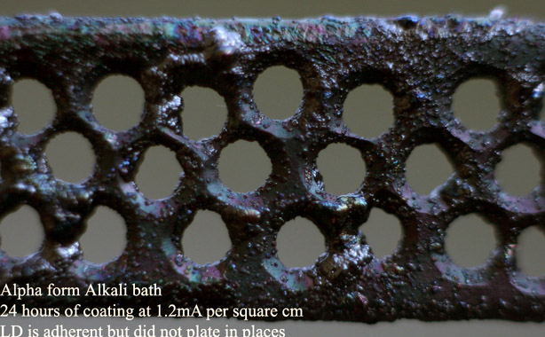
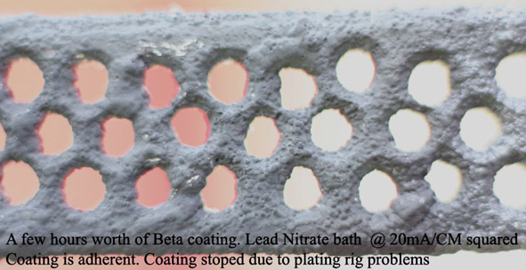
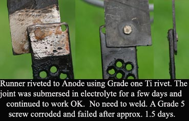

Dissolved in the order listed into 1 liter of water. The bath was heated to 60C to dissolve all Litharge. Any Litharge that did not dissolve was left in the bottom of the bath The Litharge was NOT ground with a pestle and mortar to get rid of the lumps before adding to bath. This way a mistake IMO as quite a lot of PbO did not dissolve (approx. 15 grams). Perhaps grinding might have helped, not too sure.
The actual bath size used way 1 litre. The bath was used at 70C with a current density on the Anode of 1.2mA per square cm. Stirring was not used and this may have been a mistake, not too sure. The tank had to be topped up with water on a regular basis as the level dropped due to evaporation. Ti cathodes (two) were used. The ATO coated Ti was plated for 24 hours.
An extremely bad coating of Alpha Lead Dioxide was obtained as shown in the picture. The Alpha seems to have only nucleated in places on the Anode surface for some reason or other. The Alpha that did plate adhered well to the Ti. 
I decided to go ahead and plate with Beta LD from a Lead Nitrate bath. A standard Lead Nitrate bath was made up of approx. 400 grams per liter Lead Nitrate + some Copper Nitrate in deionized water. The bath was 70°C and stirring was used. A two tank system was used, one tank was kept neutral by adding Lead Carbonate while the plating tank was at a pH of approx. 1. Each tank was 1 liter. There was a filter between each tank to stop solid Carbonate coming into the plating tank. A peristaltic pump on a timer was set up to pump solution from the plating tank to the neutral tank and a glass siphon tube was used to return the neutral solution to the plating tank. (Very small bubbles in the liquid kept accumulating in the siphon tube and after approx. 0.75 hours stopped the tube from working, requiring it to be filled with liquid again (baby siting job!). The system was shut down after approx. 3 hours.)
Plating was performed at 20mA per square cm and stirring was used. No perspex beads were added to the plating tank.
A good coating of Beta Lead Dioxide seemed to be forming on all parts of the Anode surface as shown in the picture. Approx. 0.3mm? coating was applied.

The plating tank was tested for Nitrites, after approx. one hour of plating, using an aquarium kit. It showed positive. 3ml of 16% Hydrogen Peroxide was added to the tank and there was an immediate reaction which caused a mass of very small (Oxygen?) bubbles to form. It appears that you cannot add H Peroxide to the tank as it causes the Nitric acid to react with and dissolve! the Lead Dioxide. When the H2O2 was placed into the neutral tank it caused quite a lot of bubble too for some reason or other. I may try Red Lead next time. When a little piece of LD + some plating solution is place into a test tube and a drop of H Peroxide added bubbles immediately start to stream from the LD.
A strap of Grade one Ti was attached to the Anode using a Grade 5 Titanium screw (6Al4V alloy) and the Anode placed into a Perchlorate cell which consisted of approx. 600 grams per liter Sodium Perchlorate + 58 grams per liter Sodium Chlorate. The task really is just to lower the Chlorate down to a level where the residual Chlorate can be eliminated using chemicals. The joint where the Anode was joined to the Ti strap was deliberately put below the solution level so as to see would this type of non welded joint perform OK. A similar idea was expressed on AmateurPyro by 'pdfbq' using a Pt Anode and Ti strap and some homemade Ti rivets. This type of joint seems to work perfectly. The Grade 5 screw corroded after a few days and was replaced with a homemade Grade one rivet with did not corrode. It would appear that Grade 5 is very inferior to Grade one in this type of application.

The Anode was operated in a Perchlorate cell for about 5 days and then stopped as all the LD was starting to fall off. The coating was of course far too thin.
HIT THE BACK BUTTON ON YOUR BROWSER